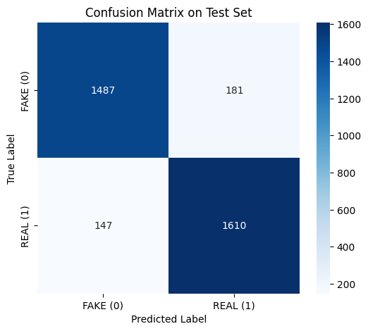
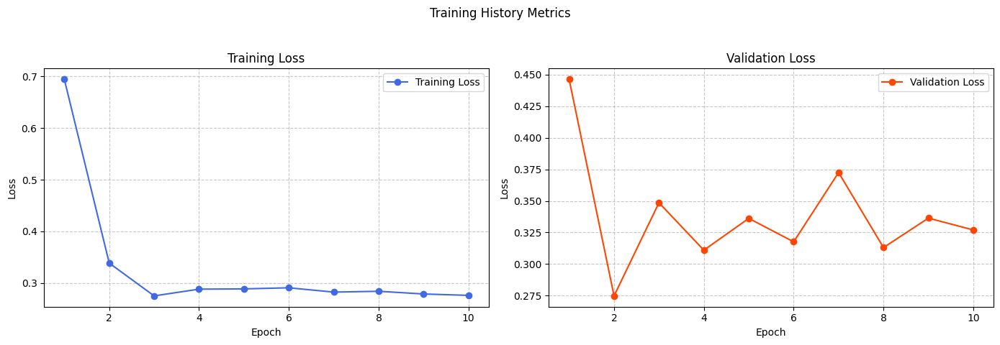

Tổng quan
Trong thời đại mạng xã hội và báo chí trực tuyến phát triển mạnh mẽ, fake news (tin giả) đã trở thành một vấn đề nghiêm trọng ảnh hưởng trực tiếp đến nhận thức cộng đồng, chính trị, kinh tế và xã hội. Các bài viết giả mạo ngày càng được tạo ra tinh vi hơn, mô phỏng cấu trúc và văn phong của tin thật, khiến việc kiểm chứng thủ công trở nên khó khăn và tốn nhiều thời gian.
Dự án này tập trung xây dựng một hệ thống phát hiện tin giả tự động bằng cách kết hợp hai mô hình ngôn ngữ mạnh mẽ là BERT và XLNet. Thay vì chỉ sử dụng một mô hình Transformer đơn lẻ, hệ thống khai thác đồng thời khả năng hiểu ngữ nghĩa hai chiều của BERT và khả năng xử lý phụ thuộc dài hạn của XLNet nhằm nâng cao độ chính xác phân loại.
Ngoài việc kết hợp đặc trưng từ hai mô hình pretrained, hệ thống còn tích hợp thêm cơ chế Gating để tự động điều chỉnh mức độ đóng góp của từng vector đặc trưng theo từng ngữ cảnh đầu vào. Điều này giúp mô hình giảm nhiễu, tăng khả năng tổng quát hóa và cải thiện hiệu quả nhận diện giữa tin thật và tin giả.
Các công cụ và công nghệ
- Ngôn ngữ lập trình: Python
- Framework / Thư viện: PyTorch, Hugging Face Transformers, Scikit-learn, Pandas, NumPy, Matplotlib
- Pretrained Models: bert-base-uncased, xlnet-base-cased
- Kỹ thuật huấn luyện: Mixed Precision Training (FP16), Gradient Clipping, AdamW Optimizer, Linear Warmup Scheduler
- Phần cứng: NVIDIA RTX 3060 12GB
Bộ dữ liệu và tiền xử lý
Hệ thống được huấn luyện trên bộ dữ liệu gồm hơn 78 000 bài báo tiếng Anh, bao gồm cả tin thật và tin giả. Các bài báo thật được thu thập từ các nguồn uy tín như Reuters và The New York Times, trong khi các bài báo giả được lấy từ các website lan truyền thông tin sai lệch.
Trước khi huấn luyện, dữ liệu được làm sạch thông qua nhiều bước preprocessing:
- Chuyển toàn bộ văn bản sang lowercase
- Loại bỏ URL và ký tự đặc biệt
- Chuẩn hóa khoảng trắng
- Loại bỏ dữ liệu rỗng và dữ liệu trùng lặp
- Lọc văn bản theo độ dài từ 32 đến 400 từ
Sau quá trình làm sạch và sàn lọc, tập dữ liệu còn khoảng 34 000 mẫu với tỷ lệ phân bố gần như cân bằng giữa hai lớp thật và giả. Dữ liệu sau đó được chia theo tỷ lệ 80% train, 10% validation và 10% test nhằm đảm bảo khả năng đánh giá tổng quát hóa của mô hình.
Kiến trúc mô hình HybridClassifier
Mô hình HybridClassifier được thiết kế theo hướng hybrid neural network, kết hợp song song hai encoder mạnh mẽ là BERT và XLNet. Cả hai mô hình đều nhận cùng một đầu vào văn bản nhưng trích xuất đặc trưng theo những cách khác nhau.
BERT đóng vai trò học biểu diễn ngữ nghĩa hai chiều nhờ cơ chế self-attention, trong khi XLNet tận dụng permutation language modeling để xử lý tốt hơn các phụ thuộc dài hạn và giữ nguyên toàn bộ thông tin đầu vào mà không cần masking token.
Đầu ra từ hai encoder được nối (concatenate) lại thành một vector đặc trưng lớn hơn. Sau đó, hệ thống áp dụng một gating layer sử dụng hàm sigmoid để học trọng số động cho từng đặc trưng. Các trọng số này được nhân trực tiếp với vector đặc trưng nhằm giữ lại những thành phần quan trọng nhất cho quá trình phân loại.
Cuối cùng, vector đã được tối ưu hóa sẽ đi qua fully connected classifier để đưa ra dự đoán cuối cùng giữa hai lớp REAL và FAKE.
Quy trình huấn luyện
Mô hình được huấn luyện với batch size 8 và learning rate 2e-6 trong 10 epochs. Hệ thống sử dụng AdamW optimizer kết hợp cùng Linear Warmup Scheduler để ổn định quá trình tối ưu hóa.
Để tăng tốc độ huấn luyện và giảm bộ nhớ GPU, dự án áp dụng Mixed Precision Training thông qua torch.amp.GradScaler. Đồng thời, kỹ thuật Gradient Clipping cũng được sử dụng nhằm tránh hiện tượng exploding gradients khi fine-tune các Transformer lớn.
Validation loss được theo dõi sau mỗi epoch và mô hình tốt nhất sẽ được lưu lại dựa trên hiệu suất tập validation.
Kết quả đạt được
Sau quá trình huấn luyện và đánh giá trên tập kiểm thử, mô hình HybridClassifier đạt được kết quả khá tích cực:

Ma trận nhầm lẫn (Confusion Matrix) của kết quả đánh giá mô hình.
- Accuracy: 90.42%
- Precision: 89.89%
- Recall: 91.63%
- F1-Score: 90.76%
Kết quả cho thấy việc kết hợp BERT và XLNet mang lại hiệu suất khá tốt. Cơ chế Gating giúp mô hình linh hoạt hơn trong việc lựa chọn đặc trưng phù hợp với từng loại văn bản.
Tuy nhiên, mô hình vẫn tồn tại một số hạn chế như chi phí tính toán cao, thời gian huấn luyện dài và dấu hiệu overfitting nhẹ sau epoch thứ 3.

Đường cong mất mát huấn luyện qua các epoch.
Thách thức và giải pháp
- Kích thước mô hình lớn: Việc sử dụng đồng thời hai Transformer lớn khiến mô hình tiêu tốn nhiều VRAM và thời gian huấn luyện. Vấn đề này được giải quyết bằng cách sử dụng FP16 Mixed Precision Training để giảm tải bộ nhớ GPU.
- Độ dài văn bản không đồng đều: Dataset chứa nhiều bài báo quá ngắn hoặc quá dài gây lãng phí token và ảnh hưởng hiệu suất. Giải pháp là áp dụng filtering theo khoảng 32–400 từ để chuẩn hóa đầu vào.
- Nguy cơ overfitting: Do mô hình có số lượng tham số lớn, hiện tượng overfit bắt đầu xuất hiện từ epoch thứ 3. Hệ thống sử dụng Dropout, Weight Decay và Validation Monitoring để giảm thiểu vấn đề này.
- Nhiễu dữ liệu: Các bài báo online thường chứa URL, ký tự đặc biệt và dữ liệu trùng lặp. Một pipeline preprocessing toàn diện đã được xây dựng nhằm làm sạch dữ liệu trước khi tokenization.
Hướng phát triển
Trong tương lai, dự án có thể được mở rộng theo nhiều hướng khác nhau nhằm tăng tính ứng dụng thực tế:
- Sử dụng các mô hình lightweight như DistilBERT hoặc ALBERT để giảm chi phí tính toán
- Hỗ trợ đa ngôn ngữ với mBERT hoặc XLM-Roberta, bao gồm cả tiếng Việt
- Tích hợp Explainable AI bằng LIME hoặc SHAP để giải thích quyết định của mô hình
- Xây dựng extension hoặc web application hỗ trợ kiểm chứng tin tức theo thời gian thực
- Kết hợp metadata như nguồn tin, tác giả hoặc thời gian đăng bài để cải thiện độ chính xác